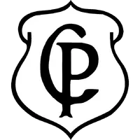

<!DOCTYPE html>
<html lang="en"></html>
<head>
    <meta charset="UTF-8">
    <meta http-equiv="X-UA-Compatible" content="IE=edge">
    <meta name="viewport" content="width=device-width, initial-scale=1.0">
    <title>Curiosidades Corinthianas</title>
    <link rel="stylesheet" href="index.css">
</head>
<div>
    
</div>
<header><h1>Curiosidades Corinthianas</h1></header>
<body>
<article class="noticia1">
    <div class="titulo">
        <ul>
            <li>
                <h2>Fundação do Time</h2>
                <p>O nome "Corinthians" foi inspirado em um time inglês chamado Corinthian-Casuals, um clube amador que fazia uma excursão pelo Brasil em 1910. Na época, o futebol ainda era um esporte elitizado no Brasil, e esses ingleses impressionaram a população com seu estilo de jogo elegante.

                    Um grupo de trabalhadores do bairro do Bom Retiro, em São Paulo, assistiu a uma das partidas no Velódromo Paulista e ficou fascinado. Inspirados pelo futebol apresentado, eles decidiram criar um time que representasse as classes mais populares. Assim nasceu o Sport Club Corinthians Paulista, um time que, desde o início, carregava o espírito de inclusão e paixão pelo futebol.</p>
                <iframe width="560" height="315" src="https://www.youtube.com/embed/jT3bUTwrOAU?si=zM_suYMfI_dHnOOu" title="YouTube video player" frameborder="0" allow="accelerometer; autoplay; clipboard-write; encrypted-media; gyroscope; picture-in-picture; web-share" referrerpolicy="strict-origin-when-cross-origin" allowfullscreen></iframe>
            </li>
        </ul>
    </div>
</article>
<article class="noticia2">
<div class="escudo">
    <ul>
        <li>
            <h2>Sócrates</h2>
            <p>Sócrates foi o principal símbolo da Democracia Corinthiana, um movimento revolucionário no início dos anos 1980 em que jogadores e funcionários do clube tomavam decisões coletivamente. Tudo era decidido por votação: escalação, contratações, rotina de treinos. Foi uma forma de resistência em plena ditadura militar no Brasil. Ele atuou no Corinthians entre 1978 e 1984, usando a lendária camisa 8. Com seu estilo elegante e visão de jogo refinada, marcou 172 gols em 297 partidas pelo clube.</p>
        </li>
            
    </ul>
</div>
</article>
<article class="noticia3">
    <div>
        <ul>
            <li>
                <h2>Libertadores 2012</h2>
                <p>O Corinthians conquistou a sua primeira Libertadores de maneira invicta, um feito raro na história da competição. Na final, derrotou o Boca Juniors por 2 a 0, com dois gols de Paolo Guerrero, no Pacaembu. A equipe sofreu apenas 4 gols em toda a campanha a melhor defesa da história da competição até então. O goleiro Cássio, em sua primeira Libertadores, brilhou com defesas decisivas, incluindo uma espetacular contra Diego Souza, do Vasco, nas quartas de final.</p>
                
            </li>
        </ul>
    </div>
</article>
</body>
<footer>
<div>
        <ul>
            <p>Site de Eduardo Alves</p>
            <p>Feito para mostrar um pouco do melhor time do mundo.</p>
            <p>ㅤ</p>
            <p>ㅤ</p>
            <p>ㅤ</p>
            <p>ㅤ</p>
            <p>ㅤ</p>
            <p>Lembrando que o palmeiras segue sem mundial.</p>
        </ul>    
</div>
</footer>
</html>